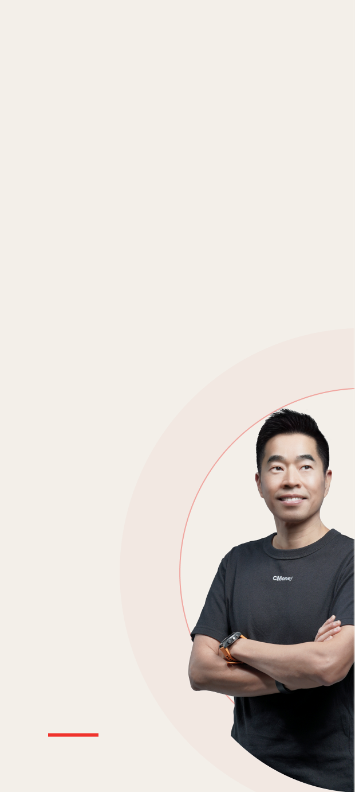

每個人，都能擁有自己的美好人生。
好的工具改變行動，緊密的社群促成互助；當好的改變被反覆強化，就會形成正向循環。

Build Better Decisions
CMoney 用資料、產品與社群，把複雜資訊變成可理解、可比較、可行動的選擇，幫助每個人在重要的人生面向持續做得更好。
1,300萬+
累計使用者
台灣主流金融理財高頻用戶首選
90%
台灣金融機構合作
深受信賴的決策數據與技術夥伴
200+
數位產品與服務
橫跨投資、社群、記帳等生活層面
5大
人生重要面向
財富、健康、工作、家庭與人際關係
產品會改變，技術會改變，市場也一定會改變。真正值得長期存在的，是我們選擇替誰解決什麼問題。
企業存在的理由不是維持既有業務，而是持續為使用者創造比昨天更好的答案。
好的工具改變行動，緊密的社群促成互助；當好的改變被反覆強化，就會形成正向循環。
我們在財富、健康、工作、家庭與人際關係中，幫助人們取得更好的資訊、形成更好的判斷，做出更好的決定。
以資料看見真實，以產品降低行動成本，以社群讓經驗流動，再從結果持續學習。
ONE COMPANY, ONE NORTH STAR
讓每一次累積，都成為下一次更好決定的基礎。
當沒有標準答案或想法衝突時，我們不迴避摩擦，而是用嚴謹的邏輯與坦誠的對話找出突破口。
正是這些日常的勇敢選擇，塑造了我們每一個人，也築起了 CMoney 的企業文化。
如果您也認同這些理念，請繼續閱讀。
不是把事情做完，而是真的讓事情變得更好。
完成專案、達成KPI、推出功能、開完會，都不是目的。真正重要的是：使用者的問題有沒有因此被解決？產品有沒有因此變得更好？團隊是不是能做到以前做不到的事情？公司是否因此更接近自己的使命？
所以在CMoney，我們不把「很努力」本身當成成果。努力值得尊重，但只有當努力最終轉化成價值，它才有意義。
我們尊重經驗，但更尊重事實。
如果一件事情沒有產生預期效果，我們不希望回答：「可是我的部分已經做完了。」真正的責任不是完成自己那一小塊，而是關心最後的結果有沒有發生。
今天的自己，不應該成為明天的上限。
在CMoney，成長不是額外的要求，而是工作的一部分。自我超越，不是要求每個人變成別人，而是不讓今天的能力，限制明天能解決的問題。
不知道沒有關係；重要的是能否快速學習、承認差距，讓自己具備解決下一個問題的能力。
Truth-seeking 要走在 Ego-protection 前面。
有些問題一直出現，不一定只是環境不好；它也可能在提醒我們，目前的能力、認知或工作方法，已經不足以解決下一個階段的問題。
讓你的力量朝向同一個方向。
身，是行動；心，是思考與判斷；靈，是我們真實的感受。當三者與自己真正認同的目標一致，一個人的力量便不需要消耗在內部互相拉扯。
重要的事情，本來就會產生衝突。你可能理性知道應該停止一個專案，情感上卻捨不得；你可能認同公司的目標，卻不認同主管提出的方法；也可能嘴上說某件事最重要，每天真正花時間的卻是另一件事。
當思考、感受與行動彼此衝突，通常代表有一個問題還沒有真正被解決。
如果不同意，就把原因說清楚；如果不知道，就承認不知道；如果看到風險，就提出來。我們鼓勵彼此說服，也願意被說服，因為討論的目的不是證明誰比較厲害，而是一起更接近事實。
這是我們希望一起工作的人長成的樣子，也是我們希望 CMoney 成為的公司。
多數公司先畫組織圖，再把人放進職缺；
CMoney 先找值得解的問題，再組成能把問題變成結果的人。
在既定範圍把事情做好
角色跟著問題與能力改變
為什麼會不同
當商業模式已經穩定，工作可以被切成明確職能：產品、行銷、業務各自把分內工作做好。但新事業看起來像行銷問題，實際可能是產品價值不夠；看起來缺業務，可能其實是客群選錯了。
所以在 CMoney，我們不希望一開始就把人關進職稱裡，而是先問：現在最值得解決的問題是什麼？誰最適合把它推進？
看看實際案例
我們用「Problem Solving」框架把問題思考清楚，從表象出發，深挖真正的問題是什麼。

實際工作時
你仍然會有清楚的任務、權責與成功標準，但解法不會全部預先寫好。隨著市場回饋，你負責的範圍、合作對象，甚至團隊組成都可能改變。
面試時，建議你確認：「這個職位有哪些核心責任會保持穩定？哪些範圍可能隨問題與能力而調整？」
兩種做法，你會選哪一個？
核心產品留存率持續下滑。分析發現原因不在介面或功能，而是行銷端引流的客群不對，加上客服與售後導覽出現斷層。你手上還有既定的 Q3 產品 Roadmap，此時你會？
選 A對任務負責：守住交付品質，把跨部門問題推回給該負責的人。
選 B對結果負責：問題在哪裡就走到哪裡，讓角色跟著問題移動。
CMoney 期待對結果負責的人：真正的責任不是完成自己那一小塊，而是關心最後的結果有沒有發生。代價是你的專長不保證是下一季的工作內容。比起你選哪一個，我們更想聽你實際做過什麼：
請回想最近一次「真正的問題不在你的職責範圍內」：你怎麼判斷該不該走進去？你因此放掉了原本的哪些責任？最後那個問題有沒有前進？
先說服主管，再開始執行
先用低成本取得市場證據
為什麼會不同
簡報完整、預測漂亮，不代表客戶真的需要。因此，我們傾向先用最小成本取得真實答案，再依據市場證據增加投入。
成熟事業除了創造現金流，也提供新產品實驗所需的資料、流量與基礎建設；而新產品要用證據證明，下一步值得被加碼。
看看實際案例
直播功能在供給、需求、成本三重不確定下，用「不要預測，用驗證的」推進。

實際工作時
一開始你可能不會立刻獲得完整團隊與大筆預算，而是先說清楚：最關鍵的假設、最小驗證方法、多久看見訊號，以及什麼結果代表應該加碼、調整或停止。
面試時，建議你確認：「這個職位最先要驗證什麼？起始資源有哪些？出現什麼證據後，公司會增加投入？」
兩種做法，你會選哪一個？
關於「如何提升 VIP 續約率」，營運主張增加專人客服，PM 主張自動化權益升級，雙方各自拿得出成功案例，僵持不下。你會選擇哪一條決策路徑？
選 A對論證負責：用模型與共識收斂爭議，由決策機制給出答案。
選 B對證據負責：用一週的最小實驗收斂爭議，由市場給出答案。
CMoney 期待對證據負責的人：實驗不是為了證明自己對，而是用最低成本取得能改變決策的資訊；職級與資歷，不能替一個還沒被驗證的觀點背書。代價是你得在贏得辯論之前就先動手。比起你選哪一個，我們更想聽你實際做過什麼：
請回想最近一次你用一個小實驗結束了一場內部爭論：你設計了什麼最小的測試？最後是誰的判斷被推翻？那個結果改變了資源怎麼放嗎？
是否準時交付承諾項目
有沒有讓未知變少、價值變大
為什麼會不同
因此，CMoney 重視的不只是執行力，也包括你能不能找出真正的 Top 1 Thing：目前哪一個問題，最限制產品或事業的成長？
一次實驗即使沒有成功，只要它排除重要假設、讓團隊停止錯誤投入，也可能是有價值的進展。但這不代表失敗沒有責任，我們仍會看假設、執行與學習是否紮實。
看看實際案例
在 CMoney，我們願意為了用戶的真實感受，推翻一套已經「看起來很完整」的做法。

實際工作時
你可能完成十項功能，但如果留存率、付費率或客戶價值沒有改善，我們不會因為工作很忙，就認定問題已經解決。新證據出現時，原定工作甚至應該被停止。
面試時，建議你確認：「這個職位目前的 Top 1 Thing 是什麼？哪個使用者結果或事業指標，代表它真的前進？」
兩種做法，你會選哪一個？
季初團隊設定了 5 大功能 Roadmap。執行到一半（完成 2 個）時，數據顯示這 2 個並未如預期帶動關鍵指標，原先的市場假設可能有瑕疵。此時你會？
選 A對承諾負責：把答應的事按質按量交完，用交付對團隊負責。
選 B對目標負責：讓資源跟著新證據走，用問題前進對結果負責。
CMoney 期待對目標負責的人：工作準時完成卻沒有改變使用者結果時，我們不以完成度結案——一個被排除的錯誤假設，比三個做完的無效功能更有價值。代價是這一季的完成度數字會很難看。比起你選哪一個，我們更想聽你實際做過什麼：
請回想最近一次你中途喊停自己承諾過的計畫：你看到什麼新證據？怎麼跟相關的人說？後來問題有沒有前進？
職位越高，決定越多
誰最接近事實，誰應該做決定
為什麼會不同
新事業的資訊變化很快。如果每個決定都要逐層請示，最接近事實的人反而無法即時行動。因此，決策權不應只跟著年資或職稱，而應跟著對問題的理解與承擔。
但這不是無條件自由。權力增加的同時，對結果、判斷品質與資訊透明的責任也會增加。
看看實際案例
「決策」是一種極度個人化且極具價值的技能，也需要在不同場景中不斷磨練。

實際工作時
Project Owner 可以在約定範圍內決定客群、優先順序、產品範圍與測試方法。主管則必須說清楚目標、資源上限、不可跨越的邊界與檢查節點。授權不是一句「你自己想辦法」。
面試時，建議你確認：「這個職位可以獨立決定什麼？哪些事情需要共同決定？主管會在哪些節點介入與校正？」
兩種做法，你會選哪一個？
線上系統突發大規模用戶客訴，原因介於「產品邏輯瑕疵」與「營運活動規則漏洞」之間，目前沒有既定 SOP，跨部門權責未明。你會？
選 A對流程負責：先把權責與程序定下來，讓每一步都有依據。
選 B對現場負責：先把用戶接住，補齊決策紀錄，並承擔後果。
CMoney 期待對現場負責的人：誰最接近事實，誰就應該做決定；灰色地帶最貴的成本不是決定錯，是沒有人決定。但權力增加，責任也增加——金額與對外口徑這類邊界，主管有義務事前講清楚。比起你選哪一個，我們更想聽你實際做過什麼：
請回想最近一次你在權責未明時先動手：你當下怎麼判斷自己可以決定到哪裡？
不同事業面對不同人群、場景與市場，
我們做的是同一件事：縮短人與好決定之間的距離。
Finance
陪伴每個人成為更成熟的投資人。
從學習、選股、交易到社群討論，提供台股與美股完整的投資決策工具，旗下包含深受百萬用戶喜愛的經典應用。

Partnership
讓專業知識成為真正能被使用的工具。
50+專業投資創作者生態系

Consumer
從每一張發票，看見更好的生活選擇。讓大量去識別化資料成為企業改善產品的強大依據。

Global
讓好的投資方法跨越市場與語言。從美股出發，與全球創作者共同建立在地化工具、內容與合作平台。

Innovation
建立平台級 AI 核心能力，打造 AI 原生產品，將領先技術輸出至所有事業單位。
30近三年推出之新產品原型
29歲時，寫下第一套投資分析工具

大學時接觸投資，我得到的不只是投資上的經驗，而是開始理解：面對不確定，我們必須蒐集資訊、形成判斷，也承擔結果。
29歲時，我看見金融研究人員每天處理大量資料，卻缺少真正能驗證判斷的工具，於是自己動手寫下分析軟體。
後來我愈來愈確定，一個工具還不夠。我希望更多人都能取得幫助自己思考、行動與彼此支持的工具和社群。這成為CMoney的起點，也成為我們今天仍在做的事。
CMoney從一個人的問題開始，但不能永遠依靠一個人的答案。
今天，我們要建立的是一套讓更多人做出好決定，也讓更多同事成為問題Owner的系統。